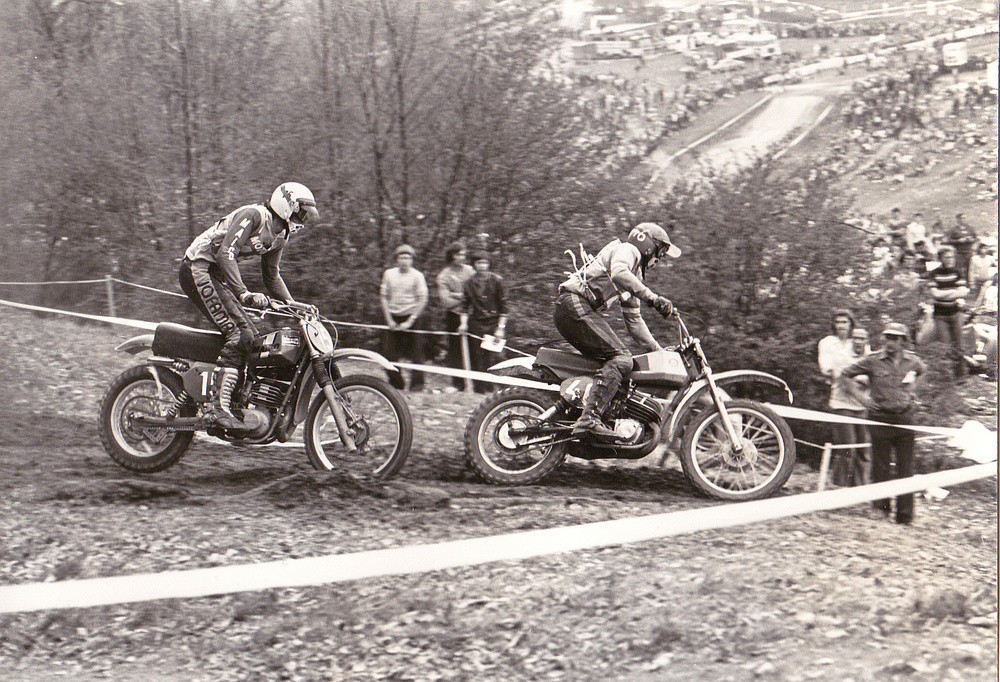

MS Holice 1977
2012/02/03, ➪Karel Pučelík, slovutný to odborník na rally a podobně, mi podstrčil pár fotek, prý ať je někam šoupnu. Moc o nich nevím, podle názvu složky se jedná patrně o mistrovství světa v Holicích. Pokud zjistím více podrobností (třeba čím bylo foceno), určitě to dodám…



Další podobné články:
kategorie „Článek“, Ze severu - den první, Jak dostat velké panoráma na web?, Nikon D7000, Léto 2010, Z Jizery, Liberec, Jak jsem zkoušel Nikona 1, Ze severu - den pátý, Potůčky a potoky, Tutoriál: hrajeme si s portréty v Gimpu